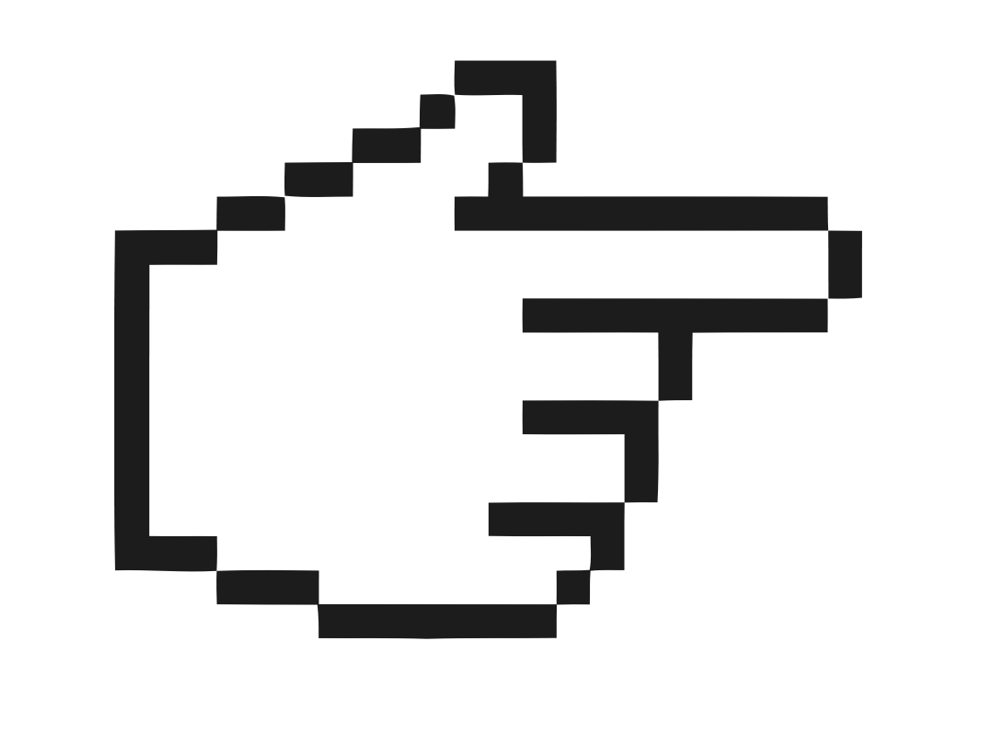

![Vakantie... is één van de leukste dingen waar ik elk jaar weer naar uitkijk, daarmee bedoel ik vooral de zomervakantie. In de zomervakantie ga ik altijd zwemmen met vrienden en ga ik vaak op vakantie naar
mijn favoriete vakantieland: Spanje. Helaas wordt dit van mij weggenomen door corona waar we nu met z'n alle in zitten. Hierdoor ben ik vorig jaar niet op vakantie geweest naar Spanje, maar hebben we er toch een leuke zomer van gemaakt door 2 keer op vakantie te gaan in Nederland.
En we hebben precies geluk gehad met de week waarin we op vakantie gingen, want precies in die week was er een hittegolf. Dat was top. Ik hoop dit jaar of volgend jaar weer op vakantie naar Spanje te kunnen.](vakantie.jpg)
Welkom op mijn portfolio, hier kom je alles over mij te weten. Op deze portfolio website kun je
elk plaatje aanklikken. Zodra je op een plaatje hebt geklikt, wordt het plaatje vergroot en vind je aan de onderkant de bijbehorende beschrijving. Dit zorgt ervoor dat je alles over mij te weten komt. Enjoy ;)

![Corona... wat moet ik daar nou van vinden. Niemand had het aan zien komen dat er een virus in de wereld zou ontstaan die letterlijk de hele wereld overneemt. Het coronavirus heeft veel verpest voor de mensen en dus ook voor mij.
Zo heb ik het afgelopen anderhalf jaar geen goed fysiek onderwijs kunnen krijgen, dat is erg vervelend omdat ik ook in mijn examenjaar zit. Het coronavirus heeft ook veel andere dingen verpest zoals het vieren van feestjes en natuurlijk op vakantie gaan. Door de maatregelen zoals de anderhalve meter en de mondkapjesplicht wordt het er allemaal
ook niet leuker op. Ik hoop dat het vaccineren in Nederland wat sneller gaat zodat ik maar ook jullie ons normale leven weer terugkrijgen.](coronaa.jpg)
Stuur mij een bericht!
Wil jij graag meer over mij te weten komen? Vul dan het onderstaande formulier in.